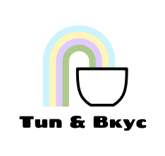
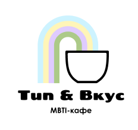
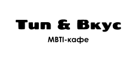
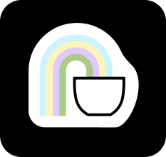
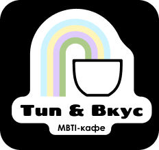
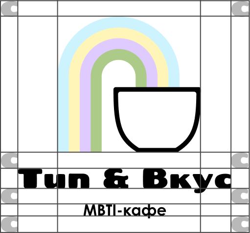
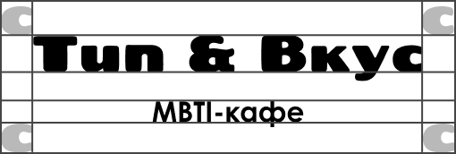
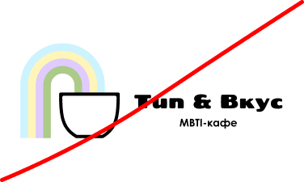
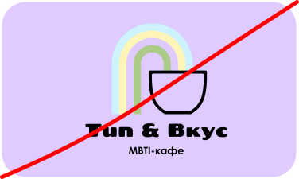

Логотипы
Основной логотип — графическая кружка с перетекающими линиями, символизирует потоки личности и мягкость переходов между психотипами.
Шрифтовой логотип «Тип&Вкус» (Fredoka One) применяется в соцсетях, на картах лояльности и в цифровых носителях.
Варианты: совместное использование графического и шрифтового знака, а также изолированное — только шрифт или только чашка с линиями.





Охранные поля

Минимальные отступы
За размер минимального отступа была взята буква «с» из шрифтовой части логотипа «Тип&Вкус». Это расстояние является базовым охранным полем для всех носителей. Логотип и ключевые элементы не должны заходить в эту зону.
За размер минимального отступа была взята буква «с» из шрифтовой части логотипа «Тип&Вкус». Это расстояние является базовым охранным полем для всех носителей. Логотип и ключевые элементы не должны заходить в эту зону.

Запрещённые модификации

Расположение графического элемента и шрифтовой части
Изменение цвета графического логотипа
Шрифтовой логотип без подстрочника

Использование логотипа с графическим элементом без подложки